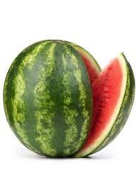

MessageWhiz is a mobile messaging application, developed by MMDSmart, the smart messaging pioneers, which enables any organization to easily create, send, and monitor mobile messaging campaigns for promotional, transactional, or notification messages. MessageWhiz is a mobile messaging application, developed by MMDSmart, the smart messaging pioneers, which enables any organization to easily create, send, and monitor mobile messaging campaigns for promotional, transactional, or notification messages. MessageWhiz is a mobile messaging application, developed by MMDSmart, the smart messaging pioneers, which enables any organization to easily create, send, and monitor mobile messaging campaigns for promotional, transactional, or notification messages. MessageWhiz is a mobile messaging application, developed by MMDSmart, the smart messaging pioneers, which enables any organization to easily create, send, and monitor mobile messaging campaigns for promotional, transactional, or notification messages. MessageWhiz is a mobile messaging application, developed by MMDSmart, the smart messaging pioneers, which enables any organization to easily create, send, and monitor mobile messaging campaigns for promotional, transactional, or notification messages. MessageWhiz is a mobile messaging application, developed by MMDSmart, the smart messaging pioneers, which enables any organization to easily create, send, and monitor mobile messaging campaigns for promotional, transactional, or notification messages. MessageWhiz is a mobile messaging application, developed by MMDSmart, the smart messaging pioneers, which enables any organization to easily create, send, and monitor mobile messaging campaigns for promotional, transactional, or notification messages.
MessageWhiz is a mobile messaging application, developed by MMDSmart, the smart messaging pioneers, which enables any organization to easily create, send, and monitor mobile messaging campaigns for promotional, transactional, or notification messages. MessageWhiz is a mobile messaging application, developed by MMDSmart, the smart messaging pioneers, which enables any organization to easily create, send, and monitor mobile messaging campaigns for promotional, transactional, or notification messages. MessageWhiz is a mobile messaging application, developed by MMDSmart, the smart messaging pioneers, which enables any organization to easily create, send, and monitor mobile messaging campaigns for promotional, transactional, or notification messages. MessageWhiz is a mobile messaging application, developed by MMDSmart, the smart messaging pioneers, which enables any organization to easily create, send, and monitor mobile messaging campaigns for promotional, transactional, or notification messages. MessageWhiz is a mobile messaging application, developed by MMDSmart, the smart messaging pioneers, which enables any organization to easily create, send, and monitor mobile messaging campaigns for promotional, transactional, or notification messages. MessageWhiz is a mobile messaging application, developed by MMDSmart, the smart messaging pioneers, which enables any organization to easily create, send, and monitor mobile messaging campaigns for promotional, transactional, or notification messages.
Fusce a diam a neque laoreet mattis in ac mi. Praesent venenatis vel nibh eget pellentesque. Vestibulum tellus erat, malesuada nec aliquam quis, feugiat vel nisi. Fusce ut leo sed orci imperdiet consequat. Curabitur porttitor enim at lacus bibendum cursus. Aenean tristique quis dolor in consequat. Nullam nibh sem, varius eget elit vitae, tincidunt aliquet nulla. Suspendisse venenatis ullamcorper feugiat. Etiam tellus lacus, posuere et diam non, luctus efficitur lacus. Nam ut porttitor tortor, quis rhoncus magna. Aenean euismod, lectus id aliquet finibus, purus turpis tincidunt tellus, eu lacinia mauris leo sit amet ligula. Praesent sagittis interdum odio.